Linear Algebra & Applications
2201NSC
Applications of the Singular Value Decomposition
Singular Value Decomposition (SVD)
Recall that any matrix $A \in \mathbb{R}^{m \times n}$ can be written as
$ A = U\Sigma V^{T} $
$ A = U\Sigma V^{T} $
$ A = U\Sigma V^{T} $
$ {\Large A =} \; \begin{pmatrix} | & | & & | \\ \u_1 & \u_2 & \dots & \u_m \\ | & | & & | \end{pmatrix} \left(\begin{array}{ccc|c} \sigma_1 & \cdots & 0 & \\ \vdots & \ddots & \vdots & \mathbf 0 \\ 0 & \cdots & \sigma_r & \\ \hline & \mathbf 0 & & \mathbf 0 \end{array} \right) \begin{pmatrix} \,-\; \v_1^T \;- \\ \,- \; \v_2^T \; - \\ \vdots \\ \,-\; \v_n^T \;- \end{pmatrix} $
$ {\Large A =} \; \begin{pmatrix} | & | & & | \\ \u_1 & \u_2 & \dots & \u_r \\ | & | & & | \end{pmatrix} \begin{pmatrix} \sigma_1 & & & \\ & \sigma_2 & & \\ & & \ddots & \\ & & & \sigma_r \end{pmatrix} \begin{pmatrix} \,-\; \v_1^T \;- \\ \,- \; \v_2^T \; - \\ \vdots \\ \,-\; \v_r^T \;- \end{pmatrix} $
$\ds =\sum_{i=1}^{r} \sigma_i \u_i \v_i^T$
where $U \in \mathbb{R}^{m \times m}$ and $V \in \mathbb{R}^{n \times n}$ are orthogonal matrices, and $\Sigma \in \mathbb{R}^{m \times n}$ contains singular values $\sigma_1 \ge \sigma_2 \ge \dots \ge \sigma_r > 0.$
The SVD as an Outer Product Expansion
Thus the SVD expresses $A$ as a sum of matrices:
$\ds A = U\Sigma V^{T} =\sum_{i=1}^{r} \sigma_i \u_i \v_i^T$
Here, the product $\u_i \v_i^T$ is a $m$-by-$n$ matrix:
$ \u_i \v_i^T $ $ = \begin{pmatrix} u_{1i} \\ u_{2i} \\ \vdots \\ u_{mi} \end{pmatrix} \begin{pmatrix} v_{1i} & v_{2i} & \dots & v_{ni} \end{pmatrix} $ $ = \begin{pmatrix} u_{1i}v_{1i} & u_{1i}v_{2i} & \dots & u_{1i}v_{ni} \\ u_{2i}v_{1i} & u_{2i}v_{2i} & \dots & u_{2i}v_{ni} \\ \vdots & \vdots & \ddots & \vdots \\ u_{mi}v_{1i} & u_{mi}v_{2i} & \dots & u_{mi}v_{ni} \end{pmatrix} $
The SVD decomposes $A$ into a linear combination of outer product matrices.
The SVD as an Outer Product Expansion
The SVD expresses $A$ as a sum of matrices:
$\ds A = U\Sigma V^{T} =\sum_{i=1}^{r} \sigma_i \u_i \v_i^T$
Here, $\u_i \v_i^T$ is the outer product of $\u_i$ and $\v_i$. This is a $m$-by-$n$ matrix:
$ \u_i \v_i^T $ $ = \begin{pmatrix} u_{1i} \\ u_{2i} \\ \vdots \\ u_{mi} \end{pmatrix} \begin{pmatrix} v_{1i} & v_{2i} & \dots & v_{ni} \end{pmatrix} $ $ = \begin{pmatrix} u_{1i}v_{1i} & u_{1i}v_{2i} & \dots & u_{1i}v_{ni} \\ u_{2i}v_{1i} & u_{2i}v_{2i} & \dots & u_{2i}v_{ni} \\ \vdots & \vdots & \ddots & \vdots \\ u_{mi}v_{1i} & u_{mi}v_{2i} & \dots & u_{mi}v_{ni} \end{pmatrix} $
- Orthonormality of $U$ and $V$ implies $\|\u_i\| = \|\v_i\| = 1$.
- This imposes a limit on the size of the elements of $\u_i \v_i^T$:
- $|u_{ji}| \le 1$ and $|v_{ki}| \le 1$, so each element has size $\leq 1$; and
- Sum of squared entries over each term satisfies $\ds\sum_{j,\,k} \left(u_{ji} v_{ki}\right)^2 = 1$.
The SVD as an Outer Product Expansion
Thus, the "size" of the terms in the SVD expansion
$\ds A = U\Sigma V^{T} =\sum_{i=1}^{r} \sigma_i \u_i \v_i^T$
decreases as we move from term to term in the expansion.
- The singular values $\sigma_i$ act as weights for the rank-one terms $\sigma_i \u_i \v_i^T$.
- Since $\sigma_1 \ge \sigma_2 \ge \cdots \ge \sigma_r > 0$, the terms become progressively less significant.
- We can therefore approximate $A$ by keeping only the first few terms of the SVD expansion: $\ds A \approx \sum_{i=1}^{k} \sigma_i \u_i \v_i^T.$
- This can provide substantial data compression: a $k$-term approximation requires $k(m+n+1)$ numbers instead of $mn$.
Approximating the 10-by-10 magic square
${\Large A=}\;\;\begin{pmatrix} 92&99&1&8&15&67&74&51&58&40\\ 98&80&7&14&16&73&55&57&64&41\\ 4&81&88&20&22&54&56&63&70&47\\ 85&87&19&21&3&60&62&69&71&28\\ 86&93&25&2&9&61&68&75&52&34\\ 17&24&76&83&90&42&49&26&33&65\\ 23&5&82&89&91&48&30&32&39&66\\ 79&6&13&95&97&29&31&38&45&72\\ 10&12&94&96&78&35&37&44&46&53\\ 11&18&100&77&84&36&43&50&27&59 \end{pmatrix} $
What is a magic square?

Every row, column and main diagonal has the same sum 505.
Let's investigate how we might approximate this matrix via its SVD.

Approximating the 10-by-10 magic square
The diagonal matrix $\Sigma$ in the SVD is:
(computed numerically 💻)
$\begin{pmatrix} 505&0&0&0&0&0&0&0&0&0\\ 0&254.8589&0&0&0&0&0&0&0&0\\ 0&0&122.9542&0&0&0&0&0&0&0\\ 0&0&0&36.8347&0&0&0&0&0&0\\ 0&0&0&0&30.5167&0&0&0&0&0\\ 0&0&0&0&0&23.3508&0&0&0&0\\ 0&0&0&0&0&0&20.5153&0&0&0\\ 0&0&0&0&0&0&0&2\text{e-}14&0&0\\ 0&0&0&0&0&0&0&0&9\text{e-}15&0\\ 0&0&0&0&0&0&0&0&0&6\text{e-}16\\ \end{pmatrix}$
$\begin{pmatrix} 505&0&0&0&0&0&0&0&0&0\\ 0&254.8589&0&0&0&0&0&0&0&0\\ 0&0&122.9542&0&0&0&0&0&0&0\\ 0&0&0&36.8347&0&0&0&0&0&0\\ 0&0&0&0&30.5167&0&0&0&0&0\\ 0&0&0&0&0&23.3508&0&0&0&0\\ 0&0&0&0&0&0&20.5153&0&0&0\\ 0&0&0&0&0&0&0&\color{red}{2\text{e-}14}&0&0\\ 0&0&0&0&0&0&0&0&\color{red}{9\text{e-}15}&0\\ 0&0&0&0&0&0&0&0&0&\color{red}{6\text{e-}16}\\ \end{pmatrix}$
The last three values are essentially zero, the tiny non-zero values arise from floating-point round-off error.
Approximating the 10-by-10 magic square
The diagonal matrix $\Sigma$ in the SVD is
$\left(\begin{array}{cccccccccc} 505&0&0&0&0&0&0&0&0&0\\ 0&254.8589&0&0&0&0&0&0&0&0\\ 0&0&122.9542&0&0&0&0&0&0&0\\ 0&0&0&36.8347&0&0&0&0&0&0\\ 0&0&0&0&30.5167&0&0&0&0&0\\ 0&0&0&0&0&23.3508&0&0&0&0\\ 0&0&0&0&0&0&20.5153&0&0&0\\ 0&0&0&0&0&0&0&0&0&0\\ 0&0&0&0&0&0&0&0&0&0\\ 0&0&0&0&0&0&0&0&0&0\\ \end{array}\right)$
This means that the full magic square has rank 7 😃
If we want to approximate the magic square, the closest approximation to the original would be the rank 6 approximation, where we include the first 6 terms out of the full 7 in the summation.
Approximating the 10-by-10 magic square
The diagonal matrix $\Sigma$ in the SVD is
$\left(\begin{array}{cccccccccc} 505&0&0&0&0&0&0&0&0&0\\ 0&254.8589&0&0&0&0&0&0&0&0\\ 0&0&122.9542&0&0&0&0&0&0&0\\ 0&0&0&36.8347&0&0&0&0&0&0\\ 0&0&0&0&30.5167&0&0&0&0&0\\ 0&0&0&0&0&23.3508&0&0&0&0\\ 0&0&0&0&0&0&20.5153&0&0&0\\ 0&0&0&0&0&0&0&0&0&0\\ 0&0&0&0&0&0&0&0&0&0\\ 0&0&0&0&0&0&0&0&0&0\\ \end{array}\right)$
Thus, for a rank-6 approximation we need to compute the following sum:
$ A_6 = U_6\Sigma_6 V_6^T $ $\ds = \sum_{i=1}^{6} \sigma_i \u_i\v_i^T$
Approximating the 10-by-10 magic square: rank-6
The diagonal matrix $\Sigma_6$ for the approximation is:
$\left(\begin{array}{cccccccccc} 505&0&0&0&0&0\\ 0&254.8589&0&0&0&0\\ 0&0&122.9542&0&0&0\\ 0&0&0&36.8347&0&0\\ 0&0&0&0&30.5167&0\\ 0&0&0&0&0&23.3508 \end{array}\right)$
$ A_6 = U_6\Sigma_6 V_6^T $ $\ds = \sum_{i=1}^{6} \sigma_i \u_i\v_i^T$
Approximating the 10-by-10 magic square: rank-6
The matrices $U$ and $V$ in the SVD are:
$ {\Huge U=}\;\; \left( \begin{array}{rrrrrrrrrr} -0.3162&-0.3921& 0.1171& 0.4893&-0.1445&-0.1839& 0.2518& 0.5566&-0.2338& 0.1028\\ -0.3162&-0.3442& 0.1773&-0.0238&-0.1595& 0.5724&-0.1463&-0.4259&-0.4146& 0.1473\\ -0.3162&-0.0604&-0.6447&-0.0794&-0.4320&-0.2556&-0.4716& 0.0000& 0.0000& 0.0000\\ -0.3162&-0.3454&-0.0042&-0.4769&-0.0270&-0.0846& 0.4128&-0.0769& 0.5020& 0.3421\\ -0.3162&-0.3654&-0.0663& 0.0292& 0.5937&-0.0349&-0.1804&-0.0537& 0.1463&-0.5922\\ -0.3162& 0.2989&-0.0068& 0.5504&-0.1404&-0.1506& 0.3006&-0.5566& 0.2338&-0.1028\\ -0.3162& 0.3468& 0.0535& 0.0372&-0.1554& 0.6057&-0.0976& 0.4259& 0.4146&-0.1473\\ -0.3162& 0.1906& 0.6923&-0.2003&-0.1098&-0.4156&-0.3994& 0.0000& 0.0000& 0.0000\\ -0.3162& 0.3456&-0.1281&-0.4158&-0.0229&-0.0513& 0.4616& 0.0769&-0.5020&-0.3421\\ -0.3162& 0.3256&-0.1901& 0.0902& 0.5978&-0.0017&-0.1316& 0.0537&-0.1463& 0.5922 \end{array} \right) $
$ {\Huge V=}\;\; \left( \begin{array}{rrrrrrrrrr} -0.3162&-0.3754& 0.5851&-0.1205& 0.3217& 0.2559& 0.0491&-0.2801&-0.3721&-0.1176\\ -0.3162&-0.4521&-0.2739& 0.2759&-0.1152&-0.3187& 0.0812& 0.4531&-0.4630& 0.0585\\ -0.3162& 0.3722&-0.6124&-0.0758& 0.2570& 0.2860& 0.0459&-0.2801&-0.3721&-0.1176\\ -0.3162& 0.4507& 0.2712&-0.2981&-0.1143&-0.1518& 0.5532& 0.2156&-0.0740& 0.3747\\ -0.3162& 0.4481& 0.2867& 0.3439& 0.0670&-0.1149&-0.2407& 0.3021& 0.0570&-0.5732\\ -0.3162&-0.1535&-0.0593& 0.2093&-0.1927& 0.7409& 0.1106& 0.2801& 0.3721& 0.1176\\ -0.3162&-0.1563&-0.1028& 0.3594& 0.1623&-0.3476& 0.4070&-0.4531& 0.4630&-0.0585\\ -0.3162&-0.1454&-0.1391&-0.4892& 0.4939&-0.1701&-0.3414& 0.2801& 0.3721& 0.1176\\ -0.3162&-0.1407&-0.0711&-0.4652&-0.6693&-0.0940&-0.0983&-0.2156& 0.0740&-0.3747\\ -0.3162& 0.1524& 0.1156& 0.2604&-0.2105&-0.0860&-0.5665&-0.3021&-0.0570& 0.5732 \end{array} \right) $
$ A_6 = U_6\Sigma_6 V_6^T $ $\ds = \sum_{i=1}^{6} \sigma_i \u_i\v_i^T$
Approximating the 10-by-10 magic square: rank-6
The matrices $U_6$ and $V_6$ are:
$ {\Huge U_6=}\;\; \left( \begin{array}{rrrrrr} -0.3162&-0.3921& 0.1171& 0.4893&-0.1445&-0.1839\\ -0.3162&-0.3442& 0.1773&-0.0238&-0.1595& 0.5724\\ -0.3162&-0.0604&-0.6447&-0.0794&-0.4320&-0.2556\\ -0.3162&-0.3454&-0.0042&-0.4769&-0.0270&-0.0846\\ -0.3162&-0.3654&-0.0663& 0.0292& 0.5937&-0.0349\\ -0.3162& 0.2989&-0.0068& 0.5504&-0.1404&-0.1506\\ -0.3162& 0.3468& 0.0535& 0.0372&-0.1554& 0.6057\\ -0.3162& 0.1906& 0.6923&-0.2003&-0.1098&-0.4156\\ -0.3162& 0.3456&-0.1281&-0.4158&-0.0229&-0.0513\\ -0.3162& 0.3256&-0.1901& 0.0902& 0.5978&-0.0017 \end{array} \right) $
$ {\Huge V_6=}\;\; \left( \begin{array}{rrrrrr} -0.3162&-0.3754& 0.5851&-0.1205& 0.3217& 0.2559\\ -0.3162&-0.4521&-0.2739& 0.2759&-0.1152&-0.3187\\ -0.3162& 0.3722&-0.6124&-0.0758& 0.2570& 0.2860\\ -0.3162& 0.4507& 0.2712&-0.2981&-0.1143&-0.1518\\ -0.3162& 0.4481& 0.2867& 0.3439& 0.0670&-0.1149\\ -0.3162&-0.1535&-0.0593& 0.2093&-0.1927& 0.7409\\ -0.3162&-0.1563&-0.1028& 0.3594& 0.1623&-0.3476\\ -0.3162&-0.1454&-0.1391&-0.4892& 0.4939&-0.1701\\ -0.3162&-0.1407&-0.0711&-0.4652&-0.6693&-0.0940\\ -0.3162& 0.1524& 0.1156& 0.2604&-0.2105&-0.0860 \end{array} \right) $
$ A_6 = U_6\Sigma_6 V_6^T $ $\ds = \sum_{i=1}^{6} \sigma_i \u_i\v_i^T$
Approximating the 10-by-10 magic square: rank-6
A rank-6 approximation:
$\left( \begin{array}{rrrrrr} -0.3162&-0.3921& 0.1171& 0.4893&-0.1445&-0.1839\\ -0.3162&-0.3442& 0.1773&-0.0238&-0.1595& 0.5724\\ -0.3162&-0.0604&-0.6447&-0.0794&-0.4320&-0.2556\\ -0.3162&-0.3454&-0.0042&-0.4769&-0.0270&-0.0846\\ -0.3162&-0.3654&-0.0663& 0.0292& 0.5937&-0.0349\\ -0.3162& 0.2989&-0.0068& 0.5504&-0.1404&-0.1506\\ -0.3162& 0.3468& 0.0535& 0.0372&-0.1554& 0.6057\\ -0.3162& 0.1906& 0.6923&-0.2003&-0.1098&-0.4156\\ -0.3162& 0.3456&-0.1281&-0.4158&-0.0229&-0.0513\\ -0.3162& 0.3256&-0.1901& 0.0902& 0.5978&-0.0017 \end{array} \right) \left(\begin{array}{cccccccccc} 505&0&0&0&0&0\\ 0&254.8589&0&0&0&0\\ 0&0&122.9542&0&0&0\\ 0&0&0&36.8347&0&0\\ 0&0&0&0&30.5167&0\\ 0&0&0&0&0&23.3508 \end{array}\right) \left( \begin{array}{rrrrrr} -0.3162&-0.3754& 0.5851&-0.1205& 0.3217& 0.2559\\ -0.3162&-0.4521&-0.2739& 0.2759&-0.1152&-0.3187\\ -0.3162& 0.3722&-0.6124&-0.0758& 0.2570& 0.2860\\ -0.3162& 0.4507& 0.2712&-0.2981&-0.1143&-0.1518\\ -0.3162& 0.4481& 0.2867& 0.3439& 0.0670&-0.1149\\ -0.3162&-0.1535&-0.0593& 0.2093&-0.1927& 0.7409\\ -0.3162&-0.1563&-0.1028& 0.3594& 0.1623&-0.3476\\ -0.3162&-0.1454&-0.1391&-0.4892& 0.4939&-0.1701\\ -0.3162&-0.1407&-0.0711&-0.4652&-0.6693&-0.0940\\ -0.3162& 0.1524& 0.1156& 0.2604&-0.2105&-0.0860 \end{array} \right)^T$
$ A_6 = U_6\Sigma_6 V_6^T $ $\ds = \sum_{i=1}^{6} \sigma_i \u_i\v_i^T$
Lower-rank approximations: $\,\ds A_k =\sum_{i=1}^{k} \sigma_i \u_i\v_i^T\;$ for $\;k = 5, 4, 3, 2, 1$
Approximating the 10-by-10 magic square: rank-6
${\Huge A=}\;\;\left(\begin{array}{rrrrrrrrrr} 92.0000&99.0000&1.0000&8.0000&15.0000&67.0000&74.0000&51.0000&58.0000&40.0000\\ 98.0000&80.0000&7.0000&14.0000&16.0000&73.0000&55.0000&57.0000&64.0000&41.0000\\ 4.0000&81.0000&88.0000&20.0000&22.0000&54.0000&56.0000&63.0000&70.0000&47.0000\\ 85.0000&87.0000&19.0000&21.0000&3.0000&60.0000&62.0000&69.0000&71.0000&28.0000\\ 86.0000&93.0000&25.0000&2.0000&9.0000&61.0000&68.0000&75.0000&52.0000&34.0000\\ 17.0000&24.0000&76.0000&83.0000&90.0000&42.0000&49.0000&26.0000&33.0000&65.0000\\ 23.0000&5.0000&82.0000&89.0000&91.0000&48.0000&30.0000&32.0000&39.0000&66.0000\\ 79.0000&6.0000&13.0000&95.0000&97.0000&29.0000&31.0000&38.0000&45.0000&72.0000\\ 10.0000&12.0000&94.0000&96.0000&78.0000&35.0000&37.0000&44.0000&46.0000&53.0000\\ 11.0000&18.0000&100.0000&77.0000&84.0000&36.0000&43.0000&50.0000&27.0000&59.0000 \end{array}\right)$
${\Huge A_6=}\;\;\left(\begin{array}{rrrrrrrrrr} 91.7464&98.5805&0.7630&5.1421&16.2435&66.4286&71.8975&52.7639&58.5080&42.9264\\ 98.1473&80.2437&7.1377&15.6605&15.2775&73.3320&56.2216&55.9752&63.7048&39.2997\\ 4.4749&81.7856&88.4438&25.3526&19.6711&55.0702&59.9377&59.6965&69.0485&41.5191\\ 84.5843&86.3123&18.6115&16.3148&5.0385&59.0632&58.5533&71.8916&71.8329&32.7976\\ 86.1816&93.3004&25.1697&4.0469&8.1094&61.4093&69.5058&73.7367&51.6361&31.9040\\ 16.6973&23.4993&75.7172&79.5887&91.4842&41.3179&46.4905&28.1054&33.6064&68.4931\\ 23.0982&5.1625&82.0918&90.1072&90.5183&48.2214&30.8145&31.3167&38.8032&64.8663\\ 79.4021&6.6652&13.3758&99.5323&95.0280&29.9062&34.3342&35.2027&44.1943&67.3590\\ 9.5352&11.2311&93.5657&90.7614&80.2793&33.9526&33.1462&47.2332&46.9312&58.3642\\ 11.1325&18.2192&100.1238&78.4935&83.3502&36.2986&44.0987&49.0782&26.7345&57.4706 \end{array}\right)$
Lower-rank approximations
$\ds A_5 = U_5\Sigma_5 V_5^T = \sum_{i=1}^{5} \sigma_i \u_i\v_i^T$
$\ds A_4 = U_4\Sigma_4 V_4^T = \sum_{i=1}^{4} \sigma_i \u_i\v_i^T$
$\ds A_3 = U_3\Sigma_3 V_3^T = \sum_{i=1}^{3} \sigma_i \u_i\v_i^T$
$\ds A_2 = U_2\Sigma_2 V_2^T = \sum_{i=1}^{2} \sigma_i \u_i\v_i^T$
$\ds A_1 = U_1 \Sigma_1 V_1^T = \sum_{i=1}^{1} \sigma_i \u_i\v_i^T$
Approximating the 10-by-10 magic square: rank-5
${\Huge A=}\;\;\left(\begin{array}{rrrrrrrrrr} 92.0000&99.0000&1.0000&8.0000&15.0000&67.0000&74.0000&51.0000&58.0000&40.0000\\ 98.0000&80.0000&7.0000&14.0000&16.0000&73.0000&55.0000&57.0000&64.0000&41.0000\\ 4.0000&81.0000&88.0000&20.0000&22.0000&54.0000&56.0000&63.0000&70.0000&47.0000\\ 85.0000&87.0000&19.0000&21.0000&3.0000&60.0000&62.0000&69.0000&71.0000&28.0000\\ 86.0000&93.0000&25.0000&2.0000&9.0000&61.0000&68.0000&75.0000&52.0000&34.0000\\ 17.0000&24.0000&76.0000&83.0000&90.0000&42.0000&49.0000&26.0000&33.0000&65.0000\\ 23.0000&5.0000&82.0000&89.0000&91.0000&48.0000&30.0000&32.0000&39.0000&66.0000\\ 79.0000&6.0000&13.0000&95.0000&97.0000&29.0000&31.0000&38.0000&45.0000&72.0000\\ 10.0000&12.0000&94.0000&96.0000&78.0000&35.0000&37.0000&44.0000&46.0000&53.0000\\ 11.0000&18.0000&100.0000&77.0000&84.0000&36.0000&43.0000&50.0000&27.0000&59.0000 \end{array}\right)$
${\Huge A_5=}\;\;\left(\begin{array}{rrrrrrrrrr} 92.8453&97.2123&1.9911&4.4904&15.7503&69.6099&70.4052&52.0336&58.1046&42.5574\\ 94.7265&84.5031&3.3147&17.6891&16.8129&63.4285&60.8674&58.2485&64.9607&40.4487\\ 6.0022&79.8840&90.1506&24.4469&18.9857&59.4917&57.8635&58.6815&68.4878&41.0061\\ 85.0896&85.6831&19.1762&16.0151&4.8117&60.5261&57.8670&71.5558&71.6473&32.6278\\ 86.3904&93.0405&25.4030&3.9231&8.0157&62.0136&69.2223&73.5980&51.5595&31.8339\\ 17.5975&22.3785&76.7231&79.0549&91.0802&43.9240&45.2680&27.5072&33.2759&68.1907\\ 19.4787&9.6693&78.0468&92.2536&92.1428&37.7426&35.7301&33.7221&40.1320&66.0820\\ 81.8856&3.5730&16.1511&98.0596&93.9134&37.0959&30.9615&33.5524&43.2826&66.5249\\ 9.8418&10.8493&93.9083&90.5796&80.1417&34.8402&32.7298&47.0294&46.8187&58.2612\\ 11.1426&18.2067&100.1350&78.4876&83.3457&36.3277&44.0851&49.0715&26.7308&57.4673 \end{array}\right)$
Approximating the 10-by-10 magic square: rank-4
${\Huge A=}\;\;\left(\begin{array}{rrrrrrrrrr} 92.0000&99.0000&1.0000&8.0000&15.0000&67.0000&74.0000&51.0000&58.0000&40.0000\\ 98.0000&80.0000&7.0000&14.0000&16.0000&73.0000&55.0000&57.0000&64.0000&41.0000\\ 4.0000&81.0000&88.0000&20.0000&22.0000&54.0000&56.0000&63.0000&70.0000&47.0000\\ 85.0000&87.0000&19.0000&21.0000&3.0000&60.0000&62.0000&69.0000&71.0000&28.0000\\ 86.0000&93.0000&25.0000&2.0000&9.0000&61.0000&68.0000&75.0000&52.0000&34.0000\\ 17.0000&24.0000&76.0000&83.0000&90.0000&42.0000&49.0000&26.0000&33.0000&65.0000\\ 23.0000&5.0000&82.0000&89.0000&91.0000&48.0000&30.0000&32.0000&39.0000&66.0000\\ 79.0000&6.0000&13.0000&95.0000&97.0000&29.0000&31.0000&38.0000&45.0000&72.0000\\ 10.0000&12.0000&94.0000&96.0000&78.0000&35.0000&37.0000&44.0000&46.0000&53.0000\\ 11.0000&18.0000&100.0000&77.0000&84.0000&36.0000&43.0000&50.0000&27.0000&59.0000 \end{array}\right)$
${\Huge A_4=}\;\;\left(\begin{array}{rrrrrrrrrr} 94.2640&96.7042&3.1244&3.9865&16.0458&68.7601&71.1207&54.2116&55.1534&41.6292\\ 96.2928&83.9422&4.5659&17.1328&17.1392&62.4903&61.6574&60.6532&61.7023&39.4240\\ 10.2433&78.3650&93.5386&22.9404&19.8691&56.9514&60.0027&65.1928&59.6651&38.2315\\ 85.3551&85.5881&19.3883&15.9208&4.8670&60.3671&58.0009&71.9635&71.0950&32.4541\\ 80.5615&95.1281&20.7466&5.9936&6.8015&65.5048&66.2824&64.6491&63.6851&35.6472\\ 18.9756&21.8849&77.8241&78.5654&91.3673&43.0985&45.9631&29.6230&30.4090&67.2891\\ 21.0044&9.1229&79.2656&91.7116&92.4607&36.8287&36.4997&36.0646&36.9580&65.0838\\ 82.9633&3.1870&17.0121&97.6768&94.1379&36.4504&31.5051&35.2069&41.0407&65.8198\\ 10.0668&10.7688&94.0880&90.4997&80.1885&34.7055&32.8433&47.3748&46.3506&58.1140\\ 5.2732&20.3088&95.4463&80.5725&82.1230&39.8432&41.1247&40.0605&38.9407&61.3071 \end{array}\right)$
Approximating the 10-by-10 magic square: rank-3
${\Huge A=}\;\;\left(\begin{array}{rrrrrrrrrr} 92.0000&99.0000&1.0000&8.0000&15.0000&67.0000&74.0000&51.0000&58.0000&40.0000\\ 98.0000&80.0000&7.0000&14.0000&16.0000&73.0000&55.0000&57.0000&64.0000&41.0000\\ 4.0000&81.0000&88.0000&20.0000&22.0000&54.0000&56.0000&63.0000&70.0000&47.0000\\ 85.0000&87.0000&19.0000&21.0000&3.0000&60.0000&62.0000&69.0000&71.0000&28.0000\\ 86.0000&93.0000&25.0000&2.0000&9.0000&61.0000&68.0000&75.0000&52.0000&34.0000\\ 17.0000&24.0000&76.0000&83.0000&90.0000&42.0000&49.0000&26.0000&33.0000&65.0000\\ 23.0000&5.0000&82.0000&89.0000&91.0000&48.0000&30.0000&32.0000&39.0000&66.0000\\ 79.0000&6.0000&13.0000&95.0000&97.0000&29.0000&31.0000&38.0000&45.0000&72.0000\\ 10.0000&12.0000&94.0000&96.0000&78.0000&35.0000&37.0000&44.0000&46.0000&53.0000\\ 11.0000&18.0000&100.0000&77.0000&84.0000&36.0000&43.0000&50.0000&27.0000&59.0000 \end{array}\right)$
${\Huge A_3=}\;\;\left(\begin{array}{rrrrrrrrrr} 96.4360&91.7321&4.4910&9.3600&9.8470&64.9875&64.6427&63.0288&63.5387&36.9363\\ 96.1869&84.1844&4.4994&16.8710&17.4412&62.6741&61.9730&60.2236&61.2938&39.6526\\ 9.8910&79.1715&93.3169&22.0689&20.8745&57.5633&61.0533&63.7628&58.3051&38.9926\\ 83.2385&90.4334&18.0566&10.6844&10.9077&64.0435&64.3137&63.3712&62.9237&37.0273\\ 80.6910&94.8317&20.8281&6.3140&6.4319&65.2799&65.8961&65.1748&64.1850&35.3674\\ 21.4184&16.2928&79.3611&84.6088&84.3956&38.8555&38.6774&39.5395&39.8398&62.0111\\ 21.1694&8.7452&79.3694&92.1198&91.9898&36.5421&36.0077&36.7343&37.5949&64.7274\\ 82.0742&5.2224&16.4526&95.4771&96.6754&37.9947&34.1569&31.5976&37.6082&67.7409\\ 8.2210&14.9941&92.9267&85.9332&85.4563&37.9115&38.3484&39.8819&39.2248&62.1021\\ 5.6735&19.3924&95.6982&81.5628&80.9805&39.1478&39.9308&41.6855&40.4861&60.4422 \end{array}\right)$
Approximating the 10-by-10 magic square: rank-2
${\Huge A=}\;\;\left(\begin{array}{rrrrrrrrrr} 92.0000&99.0000&1.0000&8.0000&15.0000&67.0000&74.0000&51.0000&58.0000&40.0000\\ 98.0000&80.0000&7.0000&14.0000&16.0000&73.0000&55.0000&57.0000&64.0000&41.0000\\ 4.0000&81.0000&88.0000&20.0000&22.0000&54.0000&56.0000&63.0000&70.0000&47.0000\\ 85.0000&87.0000&19.0000&21.0000&3.0000&60.0000&62.0000&69.0000&71.0000&28.0000\\ 86.0000&93.0000&25.0000&2.0000&9.0000&61.0000&68.0000&75.0000&52.0000&34.0000\\ 17.0000&24.0000&76.0000&83.0000&90.0000&42.0000&49.0000&26.0000&33.0000&65.0000\\ 23.0000&5.0000&82.0000&89.0000&91.0000&48.0000&30.0000&32.0000&39.0000&66.0000\\ 79.0000&6.0000&13.0000&95.0000&97.0000&29.0000&31.0000&38.0000&45.0000&72.0000\\ 10.0000&12.0000&94.0000&96.0000&78.0000&35.0000&37.0000&44.0000&46.0000&53.0000\\ 11.0000&18.0000&100.0000&77.0000&84.0000&36.0000&43.0000&50.0000&27.0000&59.0000 \end{array}\right)$
${\Huge A_2=}\;\;\left(\begin{array}{rrrrrrrrrr} 88.0141&95.6750&13.3049&5.4570&5.7198&65.8411&66.1222&65.0307&64.5627&35.2726\\ 83.4313&90.1563&17.8487&10.9595&11.1902&63.9670&64.2137&63.2556&62.8448&37.1328\\ 56.2757&57.4552&44.7734&43.5652&43.6056&52.8619&52.9052&52.7372&52.6651&48.1556\\ 83.5430&90.2908&17.7380&10.8255&11.0569&64.0127&64.2602&63.2988&62.8867&37.0875\\ 85.4598&92.5991&15.8375&8.5240&8.7688&64.7965&65.0584&64.0413&63.6052&36.3094\\ 21.9047&16.0652&78.8522&84.8342&84.6339&38.8062&38.5919&39.4239&39.7806&62.1071\\ 17.3220&10.5465&83.3960&90.3367&90.1044&36.9321&36.6835&37.6488&38.0627&63.9673\\ 32.2655&28.5417&68.5795&72.3941&72.2664&43.0431&42.9065&43.4371&43.6645&57.9016\\ 17.4336&10.6810&83.2852&90.2026&89.9710&36.9778&36.7300&37.6921&38.1046&63.9220\\ 19.3504&12.9892&81.3848&87.9012&87.6830&37.7616&37.5282&38.4345&38.8231&63.1440 \end{array}\right)$
Approximating the 10-by-10 magic square: rank-1
${\Huge A=}\;\;\left(\begin{array}{rrrrrrrrrr} 92.0000&99.0000&1.0000&8.0000&15.0000&67.0000&74.0000&51.0000&58.0000&40.0000\\ 98.0000&80.0000&7.0000&14.0000&16.0000&73.0000&55.0000&57.0000&64.0000&41.0000\\ 4.0000&81.0000&88.0000&20.0000&22.0000&54.0000&56.0000&63.0000&70.0000&47.0000\\ 85.0000&87.0000&19.0000&21.0000&3.0000&60.0000&62.0000&69.0000&71.0000&28.0000\\ 86.0000&93.0000&25.0000&2.0000&9.0000&61.0000&68.0000&75.0000&52.0000&34.0000\\ 17.0000&24.0000&76.0000&83.0000&90.0000&42.0000&49.0000&26.0000&33.0000&65.0000\\ 23.0000&5.0000&82.0000&89.0000&91.0000&48.0000&30.0000&32.0000&39.0000&66.0000\\ 79.0000&6.0000&13.0000&95.0000&97.0000&29.0000&31.0000&38.0000&45.0000&72.0000\\ 10.0000&12.0000&94.0000&96.0000&78.0000&35.0000&37.0000&44.0000&46.0000&53.0000\\ 11.0000&18.0000&100.0000&77.0000&84.0000&36.0000&43.0000&50.0000&27.0000&59.0000 \end{array}\right)$
${\Huge A_1=}\;\;\left(\begin{array}{rrrrrrrrrr} 50.5000&50.5000&50.5000&50.5000&50.5000&50.5000&50.5000&50.5000&50.5000&50.5000\\ 50.5000&50.5000&50.5000&50.5000&50.5000&50.5000&50.5000&50.5000&50.5000&50.5000\\ 50.5000&50.5000&50.5000&50.5000&50.5000&50.5000&50.5000&50.5000&50.5000&50.5000\\ 50.5000&50.5000&50.5000&50.5000&50.5000&50.5000&50.5000&50.5000&50.5000&50.5000\\ 50.5000&50.5000&50.5000&50.5000&50.5000&50.5000&50.5000&50.5000&50.5000&50.5000\\ 50.5000&50.5000&50.5000&50.5000&50.5000&50.5000&50.5000&50.5000&50.5000&50.5000\\ 50.5000&50.5000&50.5000&50.5000&50.5000&50.5000&50.5000&50.5000&50.5000&50.5000\\ 50.5000&50.5000&50.5000&50.5000&50.5000&50.5000&50.5000&50.5000&50.5000&50.5000\\ 50.5000&50.5000&50.5000&50.5000&50.5000&50.5000&50.5000&50.5000&50.5000&50.5000\\ 50.5000&50.5000&50.5000&50.5000&50.5000&50.5000&50.5000&50.5000&50.5000&50.5000 \end{array}\right)$
Approximating the 10-by-10 magic square: An alternative representation
We can represent the $10\times 10$ magic square matrix and the SVD approximations from rank 6 down to rank 1, as images generated with the computer.
| $\begin{pmatrix} 92&99&1&8&15&67&74&51&58&40\\ 98&80&7&14&16&73&55&57&64&41\\ 4&81&88&20&22&54&56&63&70&47\\ 85&87&19&21&3&60&62&69&71&28\\ 86&93&25&2&9&61&68&75&52&34\\ 17&24&76&83&90&42&49&26&33&65\\ 23&5&82&89&91&48&30&32&39&66\\ 79&6&13&95&97&29&31&38&45&72\\ 10&12&94&96&78&35&37&44&46&53\\ 11&18&100&77&84&36&43&50&27&59 \end{pmatrix}$ |
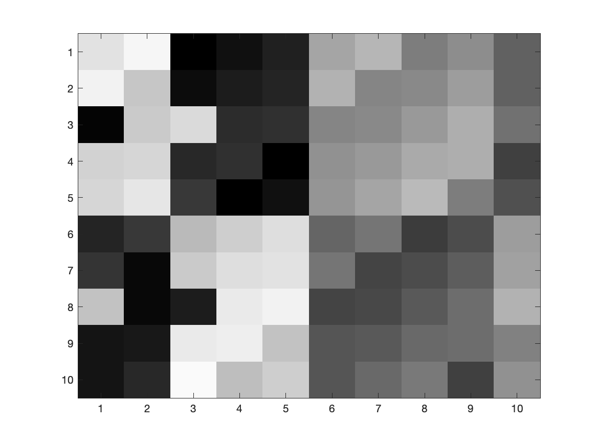 |
The values in the matrices have been rescaled to fit in the range [0, 63], and a shade of gray assigned ranging from black (0) to white (63).
Approximating the 10-by-10 magic square: An alternative representation
|
|
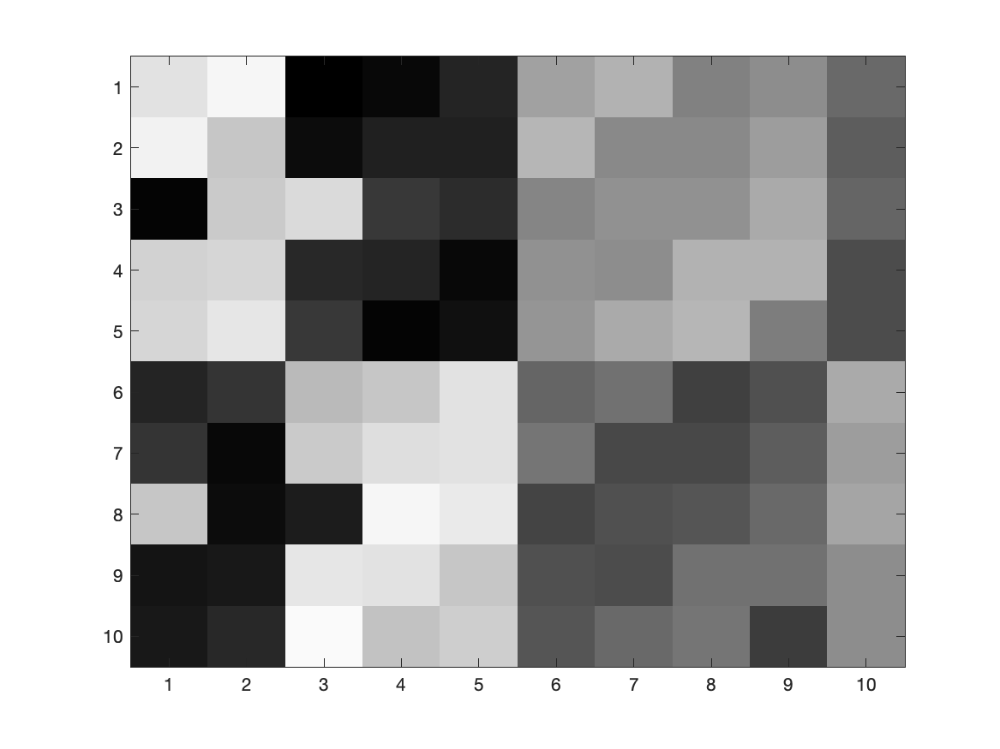 |
| Original | Rank-6 |
Approximating the 10-by-10 magic square: An alternative representation
|
|
|
| Original | Rank-5 |
Approximating the 10-by-10 magic square: An alternative representation
|
|
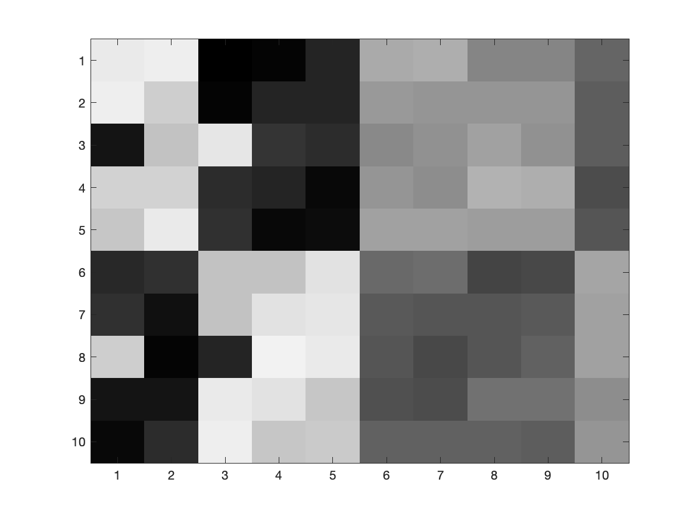 |
| Original | Rank-4 |
Approximating the 10-by-10 magic square: An alternative representation
|
|
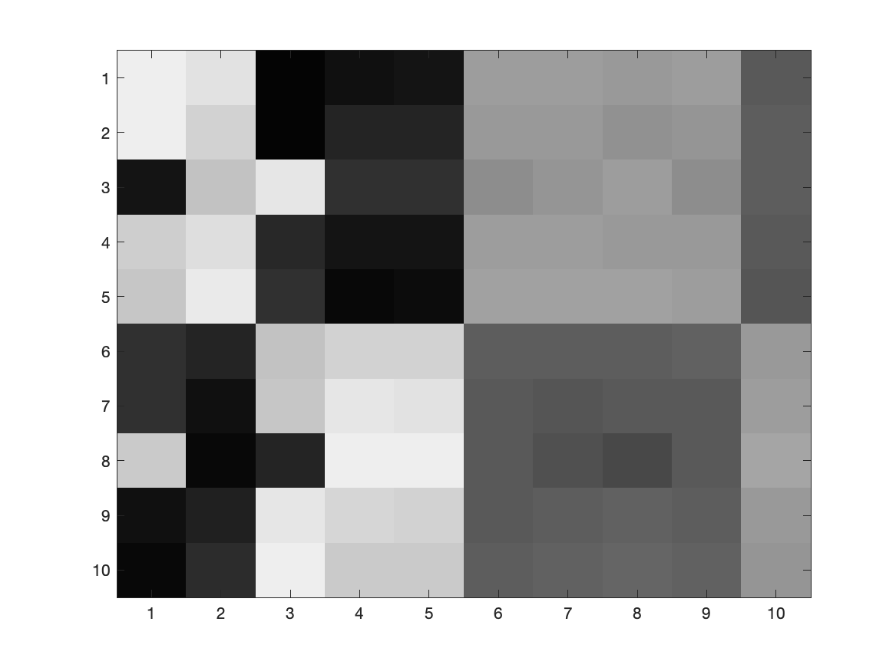 |
| Original | Rank-3 |
Approximating the 10-by-10 magic square: An alternative representation
|
|
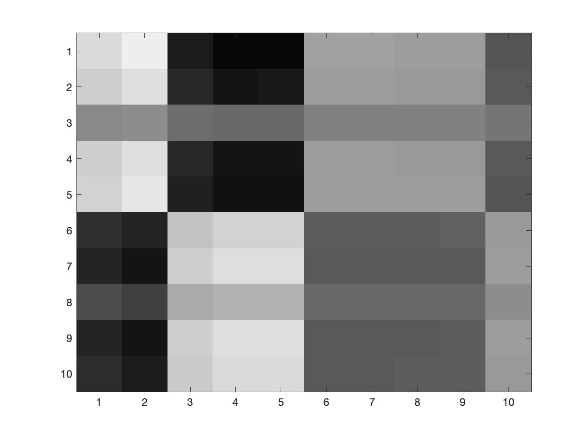 |
| Original | Rank-2 |
Approximating the 10-by-10 magic square: An alternative representation
|
|
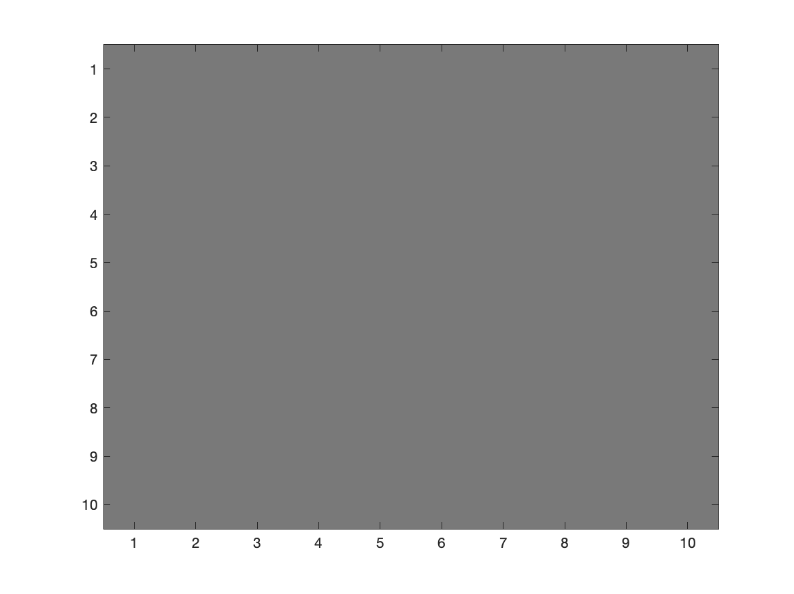 |
| Original | Rank-1 |
Approximating the 10-by-10 magic square - Octave / MATLAB 💻
>> A = magic(10) % Create a magic square.A =
92 99 1 8 15 67 74 51 58 40
98 80 7 14 16 73 55 57 64 41
4 81 88 20 22 54 56 63 70 47
85 87 19 21 3 60 62 69 71 28
86 93 25 2 9 61 68 75 52 34
17 24 76 83 90 42 49 26 33 65
23 5 82 89 91 48 30 32 39 66
79 6 13 95 97 29 31 38 45 72
10 12 94 96 78 35 37 44 46 53
11 18 100 77 84 36 43 50 27 59Command: [U, S, V] = svd(A)
computes the singular value decomposition of a matrix.
💡 Command: [U, S, V] = svds(A, r)
produces a rank-$r$ decomposition, whose factors can be
multiplied together
to
generate the approximation.
Approximating the 10-by-10 magic square - Octave / MATLAB
>> A = magic(10);>> [U_6, S_6, V_6] = svds(A, 6); % Perform rank-6 approximation>> A_6 = U_6 * S_6 * V_6' % Construct the rank-4 approximation to A.
A_6 =
Columns 1 through 7:
91.7464 98.5805 0.7630 5.1421 16.2435 66.4286 71.8975
98.1473 80.2437 7.1377 15.6605 15.2775 73.3320 56.2216
4.4749 81.7856 88.4438 25.3526 19.6711 55.0702 59.9377
84.5843 86.3123 18.6115 16.3148 5.0385 59.0632 58.5533
86.1816 93.3004 25.1697 4.0469 8.1094 61.4093 69.5058
16.6973 23.4993 75.7172 79.5887 91.4842 41.3179 46.4905
23.0982 5.1625 82.0918 90.1072 90.5183 48.2214 30.8145
79.4021 6.6652 13.3758 99.5323 95.0280 29.9062 34.3342
9.5352 11.2311 93.5657 90.7614 80.2793 33.9526 33.1462
11.1325 18.2192 100.1238 78.4935 83.3502 36.2986 44.0987
Columns 8 through 10:
52.7639 58.5080 42.9264
55.9752 63.7048 39.2997
59.6965 69.0485 41.5191
71.8916 71.8329 32.7976
73.7367 51.6361 31.9040
28.1054 33.6064 68.4931
31.3167 38.8032 64.8663
35.2027 44.1943 67.3590
47.2332 46.9312 58.3642
49.0782 26.7345 57.4706
Key points so far . . .
- The SVD expresses a matrix as a sum: $\,A = \ds \sum_{i=1}^r \sigma_i\u_i\v_i^T.$
- The terms are ordered by "significance", so we can truncate the expansion to obtain an approximation $\,A \approx \ds \sum_{i=1}^k \sigma_i\u_i\v_i^T$, with $\,k\lt r.$
- The approximation requires only $k(m+n+1)$ numbers instead of $mn$.
- We can visualise the effect of these approximations by viewing matrices as images.
💡 This suggests that we could approximate an image using the SVD, and in the process store it with fewer pieces of information. This is exactly what we aim to achieve in image compression.
Images as Matrices
Images as Matrices
A digital image can be represented by matrices of numbers.
Colour image
Three matrices
\( \color{red}{{\Large R =} \begin{pmatrix} 255 & 120 & \cdots \\ 240 & 110 & \cdots \\ 198 & 95 & \cdots \\ \vdots & \vdots & \ddots \end{pmatrix}} \; \color{darkgreen}{{\Large G =} \begin{pmatrix} 80 & 180 & \cdots \\ 75 & 165 & \cdots \\ 60 & 140 & \cdots \\ \vdots & \vdots & \ddots \end{pmatrix}} \; \color{blue}{{\Large B =} \begin{pmatrix} 30 & 90 & \cdots \\ 25 & 85 & \cdots \\ 20 & 70 & \cdots \\ \vdots & \vdots & \ddots \end{pmatrix}} \)
Each matrix stores the intensity of one colour channel at each pixel.
Images as Matrices
A grayscale image can be represented by a single matrix.
Grayscale image
Intensity matrix
${\Large A =}\, \begin{pmatrix} 255 & 254 & 250 & \cdots \\ 248 & 245 & 241 & \cdots \\ \vdots & \vdots & \vdots & \ddots \end{pmatrix}$
Each entry of $A$ represents the intensity of one pixel.
Thus, an $m\times n$ grayscale image corresponds to a matrix $A\in\mathbb{R}^{m\times n}$.
SVD Image Compression
Workflow for compressing image data using SVD truncation:
- Matrix Representation: Convert image pixels into intensity matrix $A \in \mathbb{R}^{m \times n}$.
- Factorisation: Compute full SVD: $A = U \Sigma V^T$.
- Rank Culling: Eliminate zero singular values to determine exact rank $r$.
- Compression: Discard smallest $\sigma_i$ values along with corresponding columns of $U$ and rows of $V^T$.
Reduces parameter storage from $m \times n$ down to $k \times (m + n + 1)$ while preserving dominant visual structure.
SVD Image Compression: The Scream
Goal: Use the SVD to obtain approximations of various ranks to Norwegian artist Edvard Munch's famous painting The Scream (1893).
|
|
Color Model: RGB (B&W) Image size: 1094✕1504 pixels Type: JPEG image |
SVD Image Compression: The Scream
|
|
|
| Original (1094✕1504 pixels) | 45% compression |
SVD Image Compression: The Scream
|
|
|
| Original (1094✕1504 pixels) | 76% compression |
SVD Image Compression: The Scream
|
|
|
| Original (1094✕1504 pixels) | 87% compression |
SVD Image Compression: The Scream
|
|
|
| Original (1094✕1504 pixels) | 92% compression |
SVD Image Compression: The Scream
|
|
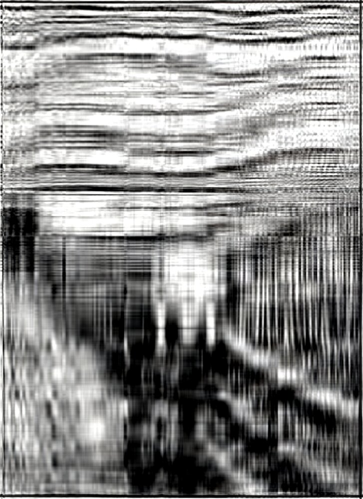 |
| Original (1094✕1504 pixels) | 98% compression |
SVD Image Compression: The Scream
|
Original |
45% |
76% |
|
87% |
92% |
98% |
Level of compression is computed as:
\[
1- r\frac{1+ m + n}{mn}
\]
where $r$ is the rank for the approximation,
and $m,n$ are the dimensions of the image.
👉 $\,r=350,\,150,\,80,\,50,$ and $10$
$\Rightarrow \,45\%,\,76\%,\,87\%,\,92\%,$ and $98\%;$
$\quad \,$respectively.
Edvard Munch's The Scream, compressed to various levels. The percentage shows the reduction in storage data required compared to the original, obtained by reducing the rank of the SVD approximation.
Octave / MATLAB
Run code locally! 💻 😃
svd_compression/
├── svd_image_compression.m
└── picture_file.jpg
Warning: It requires a little more
knowledge of Octave / MATLAB❗️
r = 10; % Rank
% Load image
a = imread("picture_file.jpg");
% RGB channels
R = double(a(:, :, 1));
G = double(a(:, :, 2));
B = double(a(:, :, 3));
% Rank-r SVD approximation of each channel
[U,S,V] = svd(R, "econ");
Rr = U(:,1:r) * S(1:r,1:r) * V(:,1:r)';
[U,S,V] = svd(G, "econ");
Gr = U(:,1:r) * S(1:r,1:r) * V(:,1:r)';
[U,S,V] = svd(B, "econ");
Br = U(:,1:r) * S(1:r,1:r) * V(:,1:r)';
% Reconstruct image
a_out = cat(3, Rr, Gr, Br);
a_out = uint8(max(0, min(255, a_out)));
% Compression
[m,n,~] = size(a);
comp = round((1 - r*(1+m+n)/(m*n))*100);
% Display
subplot(1,2,1);
imshow(a);
title("Original");
subplot(1,2,2);
imshow(a_out);
title(sprintf("Rank-%d Approximation / Compression %d%%", r, comp));Python 🐍
Run code locally! 💻 😃
svd_compression/
├── svd_image_compression.py
└── picture_file.jpg
Warning: It requires a more advanced
knowledge of Python❗️❗️❗️🧐
import numpy as np
from scipy.sparse.linalg import svds
import matplotlib.pyplot as plt
from PIL import Image
r = 10 # Rank
# Load image from local folder
a = np.array(Image.open("picture_file.jpg"))
R = a[:, :, 0].astype(float)
G = a[:, :, 1].astype(float)
B = a[:, :, 2].astype(float)
# Function for rank-r SVD approximation
def svd_approx(X, r):
U, S, Vt = svds(X, k=r)
# Reverse order: svds returns smallest → largest
S = np.diag(S[::-1])
U = U[:, ::-1]
Vt = Vt[::-1, :]
return U @ S @ Vt
# Apply to each channel
R_approx = svd_approx(R, r)
G_approx = svd_approx(G, r)
B_approx = svd_approx(B, r)
# Reconstruct image
a_out = np.stack([R_approx, G_approx, B_approx], axis=2)
a_out = np.clip(a_out, 0, 255).astype(np.uint8)
# Compression
m, n, _ = a.shape
comp = round((1 - r * (1 + m + n) / (m * n)), 2) * 100
# Display
fig, axes = plt.subplots(1, 2, figsize=(15, 10))
axes[0].imshow(a)
axes[0].set_title("Original")
axes[0].axis("off")
axes[1].imshow(a_out)
axes[1].set_title(f"Rank-{r} Approximation / Compression {comp}%")
axes[1].axis("off")
plt.show()From Theory to Computation
Theoretically: we can compute the SVD using the linear algebra we have learned.
However, computing an SVD by hand becomes very time-consuming for large matrices.
💻 This is where the computer helps us: it performs the numerical calculations quickly and accurately.

Technology changes quickly!
But the mathematical theory lasts much longer!

Geometric Interpretation: Action on Unit Circle
Consider transformation of unit circle points $x \in \mathbb{R}^2$ ($\|\mathbf{x}\| = 1$) under matrix $A$:
$ A = \begin{pmatrix} 3 & 4 \\ 1 & 2 \end{pmatrix} $
Maps unit circle into an ellipse in $\mathbb{R}^2$.
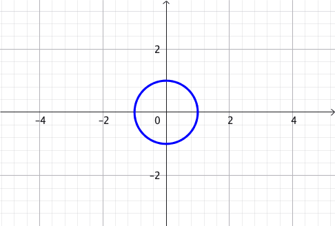
Key Questions:
- Which direction produces the
most stretching? -
Which direction produces the
least stretching?
Finding the Directions of Maximum and Minimum Stretch
A point $\mathbf{x}$ on the unit circle satisfies $\|\mathbf{x}\|=1$ and is mapped to $A\mathbf{x}$.
Question: Which direction $\mathbf{x}$ produces the largest or smallest value of $\|A\mathbf{x}\|$?
$ \|A\mathbf{x}\| $ $= \sqrt{\left(A\mathbf{x}\right)^T\left(A\mathbf{x}\right)} $ $ = \sqrt{\mathbf{x}^T A^T A\,\mathbf{x}}.$
So we need to understand the symmetric matrix $A^T A$.
Key idea: The directions of greatest and least stretching are hidden in the eigenvectors of $A^T A$.
Principal Directions of Stretching
Let $\v_1,\v_2$ be orthonormal eigenvectors of $A^T A$:
$ A^T A\,\v_i = \lambda_i \v_i, \qquad \lambda_1 > \lambda_2 > 0. $
Any unit vector can be written as
$ \mathbf{x}=c_1\v_1+c_2\v_2, \qquad c_1^2+c_2^2=1. $
Thus $\, \|A\mathbf{x}\|^2 = \lambda_1c_1^2+\lambda_2c_2^2. $
Maximum Stretch
$c_1=1,\;c_2=0$ $\;\Longrightarrow\; \mathbf{x}=\v_1$
$\|A\v_1\|=\sqrt{\lambda_1}=\sigma_1 \qquad \qquad$
Minimum Stretch
$c_1=0,\;c_2=1$ $\;\Longrightarrow\; \mathbf{x}=\v_2$
$\|A\v_2\|=\sqrt{\lambda_2}=\sigma_2\qquad \qquad$
Therefore, the eigenvectors of $A^T A$ give the principal directions, while their eigenvalues determine the amount of stretching.
From $A^T A$ to the SVD
-
The eigenvalues of $A^T A$ satisfy
$\lambda_i=\sigma_i^2,$
where $\sigma_i$ are the singular values of $A$. -
The corresponding eigenvectors $\v_i$ are the columns of
$V$ in
$A=U\Sigma V^T.$
- Thus, the columns of $V$ give the principal directions in the original space.
- The singular values $\sigma_i$ give the corresponding stretching factors.
$ \v_i \xrightarrow{\;A\;} \sigma_i\,\u_i $
$V$: directions $\Sigma$: stretching $U$: resulting directions
Geometric Meaning of the Principal Directions
$\qquad A = \begin{pmatrix} 3 & 4 \\ 1 & 2 \end{pmatrix} $
$ \qquad \color{red}{\v_1} \xrightarrow{\ A\ } \color{red}{\sigma_1 \u_1} $
$ \qquad \color{blue}{\v_2} \xrightarrow{\ A\ } \color{blue}{\sigma_2 \u_2} $
Eigenvectors of $A^TA,$ with corresponding stretching factors.
👉 $\,A= U\Sigma V^T$ $= \begin{pmatrix} \color{red}{-0.915} & \color{blue}{-0.405} \\ \color{red}{-0.404} & \color{blue}{0.915} \end{pmatrix} \begin{pmatrix} \color{red}{5.465} & 0 \\ 0 & \color{blue}{0.37} \end{pmatrix} \begin{pmatrix} \color{red}{-0.572} & \color{blue}{-0.820} \\ \color{red}{-0.820} & \color{blue}{0.572} \end{pmatrix}^T $
From SVD to Principal Component Analysis (PCA)
So far, we have considered the action of a matrix $A$ on vectors $\mathbf{x}$.
|
What if instead we have a set of data stored in a matrix $X$? $ X= \begin{pmatrix} x_1 & y_1\\ x_2 & y_2\\ \vdots & \vdots\\ x_m & y_m \end{pmatrix} $ Can we find the directions in which the data have the greatest spread? |
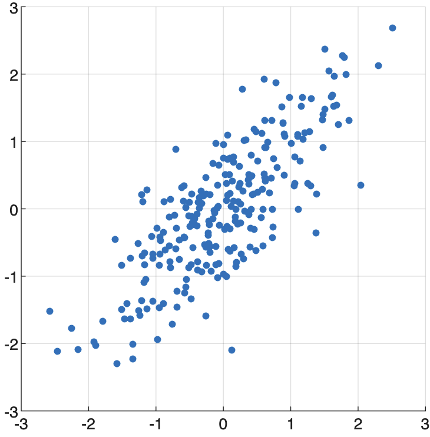 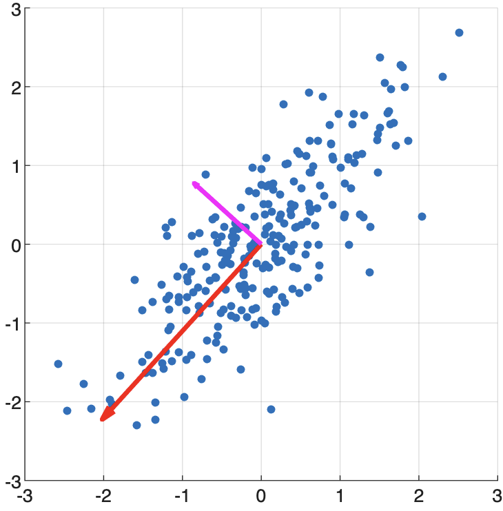 |
Which direction captures the most variation? 🤔
Finding the Direction of Greatest Spread
Let $\mathbf v$ be a unit vector: $\|\mathbf v\|=1$. Multiplying by $\,X\,$ gives $\,X\v.$
The entries of $X\mathbf v$ are the projections of the observations onto the direction $\mathbf v$.
Therefore, the direction of greatest spread maximises
\( \|X\mathbf v\|\; \) subject to \(\; \|\mathbf v\|=1. \)
But this is exactly the problem we solved when studying the maximum stretching of a matrix!
$X=U\Sigma V^T$
The columns of $V$ give the orthogonal directions of spread, from greatest to least.
Principal Vectors and Principal Components
Suppose \( \ds X=U\Sigma V^T = \sum_{i=1}^r \sigma_i\,\mathbf u_i\mathbf v_i^T. \)
Principal vectors
$\mathbf v_1,\mathbf v_2,\ldots$
Orthogonal directions
of decreasing spread
$\sigma_1\geq\sigma_2\geq\cdots$
Principal components
$\mathbf c_j=X\mathbf v_j$ $=\sigma_j\mathbf u_j$
Coefficients describing the data
Since the $\mathbf v_i$ are orthonormal, \(X\mathbf v_j = U\Sigma V^T\mathbf v_j = \sigma_j\mathbf u_j. \)
Thus the principal components are the columns of $XV=U\Sigma.$
Principal Component Analysis: The Procedure
1. Arrange the data:
$ X= \begin{pmatrix} \text{obs. 1}\\ \text{obs. 2}\\ \vdots\\ \text{obs. }m \end{pmatrix}\quad $
2. Compute the SVD:
$X=U\Sigma V^T \quad$
3. Find principal vectors:
$\mathbf v_1,\mathbf v_2,\v_3,\ldots \qquad $
4. Compute the principal components: $\, XV= \begin{pmatrix} |&|&&|\\ X\mathbf v_1& X\mathbf v_2& \cdots& X\mathbf v_r\\ |&|&&| \end{pmatrix} = U\Sigma $
5. Keep the most significant components: $ \;\sigma_1\geq\sigma_2\geq\cdots $
The first components capture the greatest variation in the data.
PCA finds a new orthogonal basis that reveals dominant patterns in the data!
Why is PCA Useful?
PCA transforms data into a new coordinate system that highlights the most important patterns and variations.
Distinguishing Data Sets
Project data onto the principal directions to reveal differences between groups or classes.
high-dimensional data
$\qquad \longrightarrow\;$
informative features
Dimensionality Reduction
Keep only the principal components that capture most of the variation in the data.
many variables
$\qquad \longrightarrow\;$
fewer variables
Data Compression
Approximate the data using only the most significant SVD components.
$X \approx \sum_{i=1}^{k} \sigma_i\mathbf u_i\mathbf v_i^T\quad$
Data Visualisation
Reduce complex data to two or three principal components for visual exploration.
high-dimensional data
$\quad\;\longrightarrow\;$
2D or 3D visualisation
💡 PCA helps us see what matters most in our data! 📈 😃
Using PCA for Iris Dataset Classification
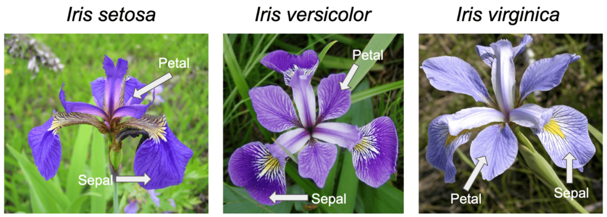
A well-established example illustrating the usefulness of PCA uses the Iris dataset, originally collected by Edgar Anderson, containing measurements of the lengths and widths of iris sepals and petals. The dataset contains measurements for 50 flowers from each of three different species: setosa, versicolor, and virginica.
Question: Can we use these measurements as a way of identifying which species an iris belongs to? 🤔
Using PCA for Classification of the Iris Dataset
|
Iris Dataset (csv) |
This is one of the earliest datasets used in the literature on classification methods and widely used in statistics and machine learning. |
A well-established example illustrating the usefulness of PCA uses the Iris dataset, originally collected by Edgar Anderson, containing measurements of the lengths and widths of iris sepals and petals. The dataset contains measurements for 50 flowers from each of three different species: setosa, versicolor, and virginica.
Using PCA for Iris Dataset Classification
Using PCA for Iris Dataset Classification
MATLAB
Run code locally! 💻 😃
iris_data_plot/
├── iris_data_plot.m
└── iris.data.csv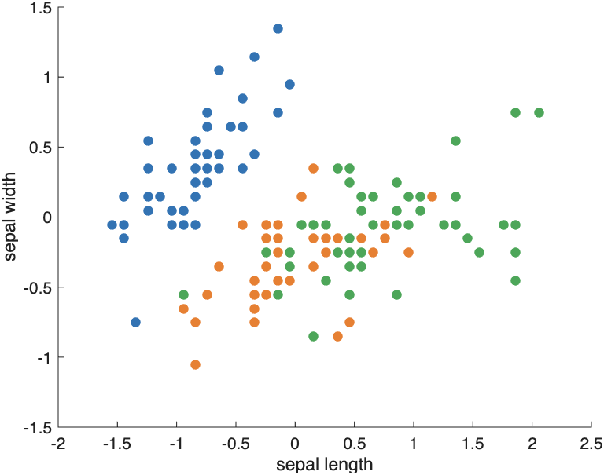
Plot of sepal length (horizontal) vs sepal width (vertical):
% Read the mixed data into a table
T = readtable("iris.data.csv");
% Extract ONLY the first 4 columns (the numbers)
iris_num = table2array(T(:, 1:4));
% Convert column 5 to color codes
[~, ~, color_idx] = unique(T{:, 5});
% Center the numerical data
iris_c = iris_num - mean(iris_num);
% Plot
scatter(iris_c(:,1), iris_c(:,2), [], color_idx, 'filled')
xlabel('sepal length')
ylabel('sepal width')Warning: It requires a more advanced knowledge of MATLAB❗️❗️❗️🧐
Using PCA for Iris Dataset Classification
MATLAB
Run code locally! 💻 😃
iris_class_svd/
├── iris_class_svd.m
└── iris.data.csv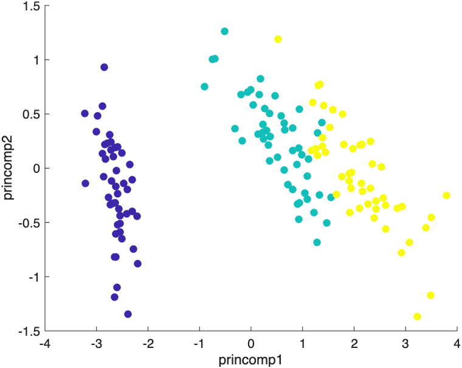
Plot of the first and second principal components:
% Read the mixed data into a table
T = readtable("iris.data.csv");
% Separate the numbers (cols 1-4) from the species text (col 5)
iris_num = table2array(T(:, 1:4));
[~, ~, color_idx] = unique(T{:, 5});
% Center the numerical data
iris_c = iris_num - mean(iris_num);
% Compute Singular Value Decomposition (SVD)
[u, s, v] = svds(iris_c, 2);
% Project numeric data onto the top 2 principal components
us = iris_c * v;
% Plot using the species color indices
scatter(us(:,1), us(:,2), [], color_idx, 'filled')
xlabel('princomp1')
ylabel('princomp2')Warning: It requires a more advanced knowledge of MATLAB❗️❗️❗️🧐
From PCA Theory to Computation
Theoretically: we can compute PCA using the linear algebra we have learned.
However, carrying out the calculations by hand becomes very time-consuming for large datasets.
💻 This is where the computer helps us:
it performs the numerical calculations
quickly and accurately.
Technology changes quickly!
But the mathematical ideas behind PCA last much longer!